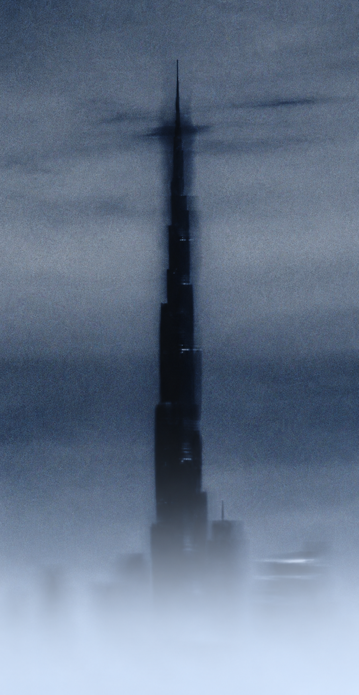
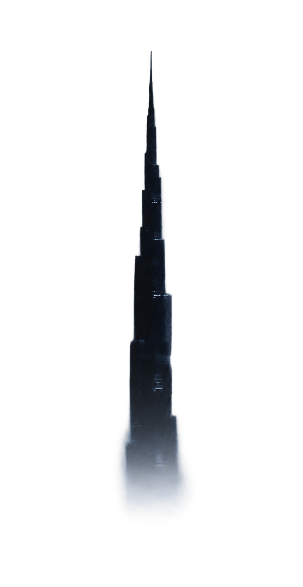
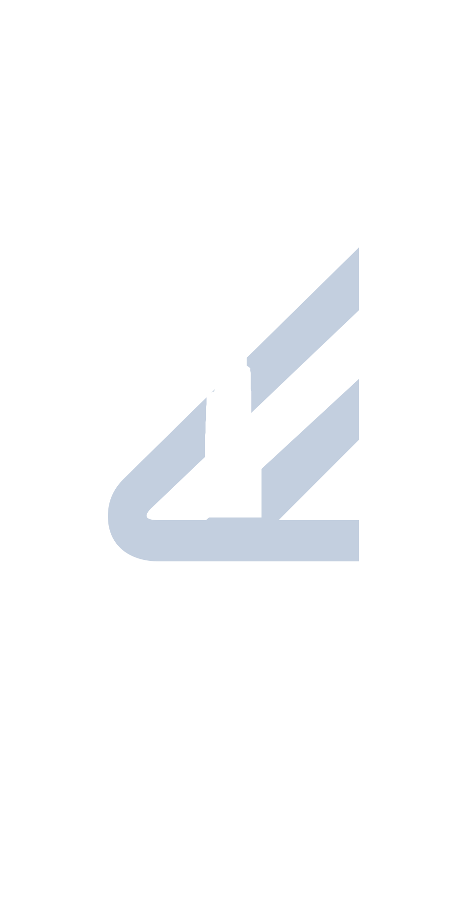

Your company operates globally. Your bank should too.
Local IBANs, international
payments, corporate cards. 0%
FX Markup.



Backed by:
Combinator
Y Combinator
Local IBANs, international
payments, corporate cards. 0%
FX Markup.


